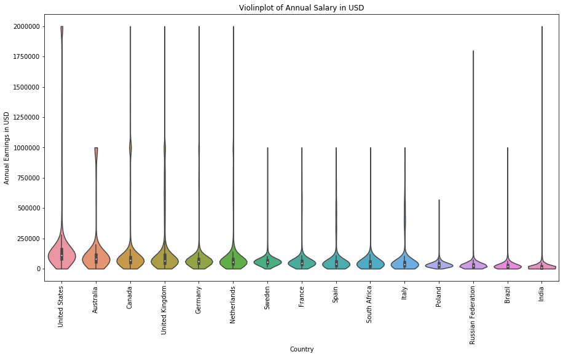

The proposed question is perhaps over-ambitions, but the following blog analyses data of a 2019 Stack Overflow Survey and therefore may shed some sort of indication to salary trends of IT professionals. 88883 Stack Overflow users were surveyed (by the way, that thing is an elephant shrew). Lets start by having a look at what people earn in general.

Here we see a violinplot of earnings grouped by country, for countries with more than 1000 surveys sorted from left
to right by median (and South Africa). The US has the highest salaries, followed by other english speaking
countries. Then come countries from continental Europe (and South Africa). The lowest stated earnings for
IT professionals are in India. There are also blimps in the upper parts of the violin plots, at 1M and 2M USD, and
these might be standard high salaries for CEOs and other lucky people.
Now, are there differences in earnings
between men and women?
The above diagram is a histogram of salaries for women (blue) and men (grey). The general consensus is that there
is a sexist bias against women in the business world, especially when it comes to salaries. For Stack Overflow
users, this trend does not seem true if you are earning 'normal' amounts of money. There are however more men
earning equal or more than 1M USD than women. Also, only ~7.5% of Stack Overflow users are women, which may be a
result of some other gender bias that the histogram does not show.
But how do salaries differ for age-groups?
Wow! it looks like there is a divergence in salaries when looking at the scatter plot of age vs earnings. this
suggests that some programmers become highly valued very quickly (before they are ~35) and others have flat-lining
salary prospects. Perhaps hard work does pay off?
There are > 88k points plotted on this scatter plot. Perhaps
the above only shows us the outliers, because data is plotted on top of each-other.
The above diagram is a 2D kernel density distribution plot. It can be read as if it were a contour plot of the
scatter plot. The y-axis gives the density - the integral of this plot will be 1.
This KDE plot shows that
the divergence in salaries with increasing age is much stronger for outliers.
In conclusion I would like to say that your future earnings will be more or less predictable, unless you are an
outlier. It also wouldn't hurt to be in the US and not in India.
B. W.
Lock-down, 2020